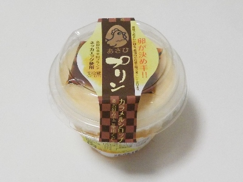

いいものを探そう ～出雲らへん～
島根県大田市波根町221-1
2025/09/06
旭養鶏舎のあさひプリン。

パッケージに小さな字が沢山書いてあります。なんかこだわりが色々とありそうです。
養鶏場のプリンなので玉子多めの固いカスタードプリンを想像していたんですが、そんなことはなかったです。
とろっとしていてコクのある美味しいプリンでした。どことなく高級感がありました。
【旭養鶏舎TOP】
【地域TOP】
【HPTOP】
【『大田市らへん』の他の情報はこちら】
【おいしいものを食べよう。】【たくさん寝よう。】
【ソロ活をしよう!】【季節感のあることをしよう。】【動画視聴はほどほどに。】【当サイトの全てのコンテンツは無断転載禁止です。】